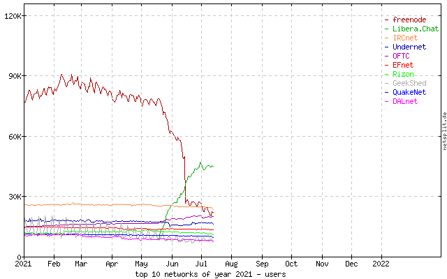
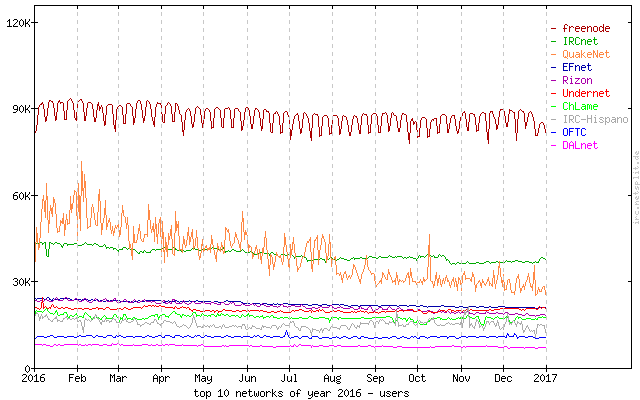
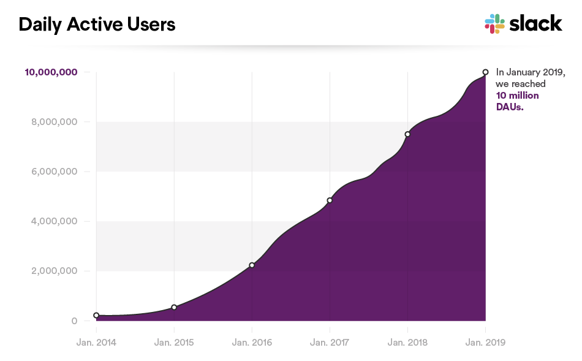
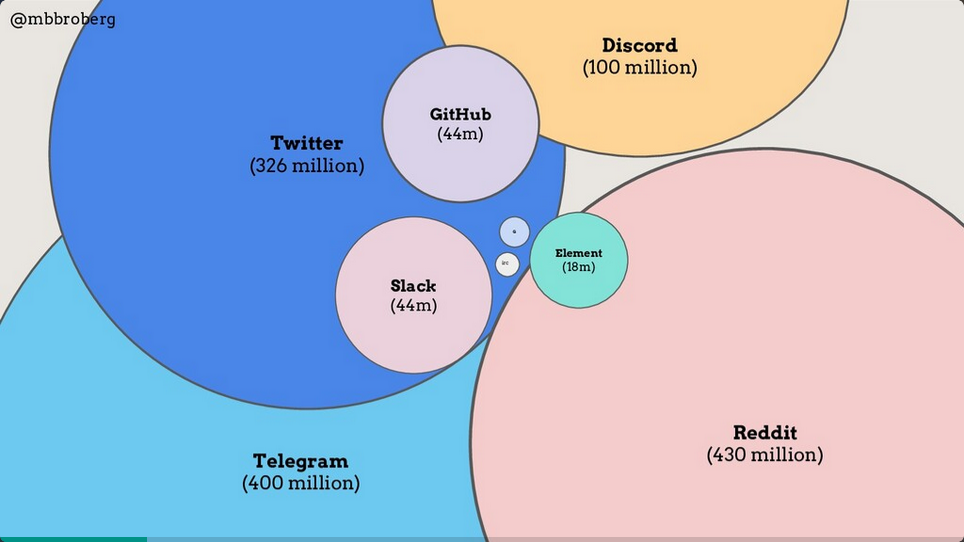
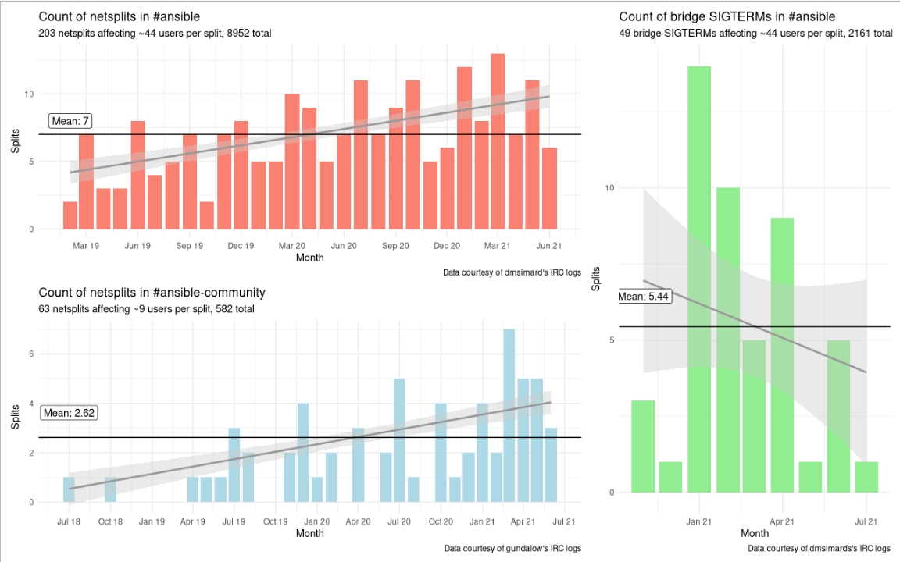

Over the last few days since I posted my thoughts on
Ansible & Matrix, I been getting some really good
questions and comments - thank you all!
Two themes have come up that go well together for a data-laden blog post, and
they are:
- How do we know there are users wanting to use Matrix?
- Isn't the bridge to IRC frequently broken?
These are solid questions - we want to know we're making the right choice, both
for the future of the community, and for the people who wish to remain on IRC.
But how can we go about answering them? Gathering data on these things isn't
easy, but in this post I'm going to do my best - if you know of more / better
data sources, I'd love to hear about
it!
Size of user-base
OK, for this we have some decent data sources. Let's tackle IRC first. The best
data source I know of is https://netsplit.de/networks/top10.php which gives us
an idea of the change in users over time. Here's a sample:

Sadly the graphs are premade images/posts, so we dont have the raw data, but roughly
I'd say that in July 2021, those ten add up to ~180k users (Libera itself is at
~50-55k). But Netsplit has historical data:

That's 2016, and here it adds up to ~250k with Freenode at 90k. Let's do one
more:

Going back another 5 years to 2011, and the numbers are even higher - 2021 is
just a fraction of what 2011 was. I spent some time going through other years,
and it's fairly easy to convince myself that IRC is declining. That's one data
point, but what about the others?
Well, the Ansible community already vetoed the use of proprietary options (and
rightly so, in my view). But for completeness, lets take a quick look. There's
a lot of "corporations banging their own drum" in this space, but I did find
this graph:

I'm struggling to get anything newer, but 10 million in 2019 is certainly
higher now. Discord claims to be 150 million (https://discord.com/company).
That's nice, but both require a separate server and login for each community,
and anyway the community said no. Let's go back to FOSS...
I'm struggling to find any data at all on the likes of Rocket.Chat, Mattermost,
etc, and Gitter has been merged into Matrix anyway. The fact that many of the
FOSS solutions are self-hosted make it hard to get accurate data in any case.
What about Matrix? That also turns out to be a surprisingly tricky thing to
answer, but for very different reasons. Because of it's distributed nature,
you don't have a single source of data to query. This slide from Matt
Broberg
puts Element at 18 million (and Slack at 44 million, phew), and while I don't
know where Matt sourced the numbers, they seem pretty high to me.

Maybe we can try to get our own value. There are (to my knowledge) two
"traveller bots" in Matrix, who's job is to join any public room they see
mentioned, to gather anonymous stats. One is "#@voyager:t2bot.io" which has
been running for around 3 years, and has seen over 3 million unique Matrix IDs;
the other is "@server_stats:nordgedanken.dev" which is much newer, but has
already seen around 0.5 million IDs in it's life time.
Matrix accounts (and usage) gets weirder still, though. It is highly likely
that many of these unique IDs seen by the traveller bots are in fact bridged
users from other networks. Now, you might reasonably argue that this means the
native users of Matrix are lower, and you'd be right. However, I don't
think it matters, because what we really care about is "addressable IDs" -
that is, who I can talk to. The power that Matrix has to build communities
across networks has value, and we should allow for it in our stats.
Even if you disagree with me, though, let's do a pessimistic comparison. Start
with 50k for Libera, and 500k (the Nordgedanken bot value) for Matrix, and then
subtract Libera because of bridging (thus 450k), then Matrix is still 9x
bigger. If you agree with me, and we pick a value between the two bots (say, 1
million for simplicity), then Matrix is 20x bigger than Libera, and 3x bigger
than IRC as a whole.
Active users
As a footnote to this, I want to address one more thing. So far we've looked at
any user ID in a room/channel, which obviously includes idle users. What about
active users?
I went and got my logs for the last month (19th June -> 19th July) in two IRC
channels, #ansible and #ansible-community (happily, I can use Matrix to do so
:P). I'll also do that for the entirely unoffical Matrix room
"ansible:matrix.org" (which by the way was created in 2016). Here's what we
see:
| Room |
Total users (today) |
Messages |
Active users |
Frequent users (> 10 lines) |
Msgs per active user |
| #ansible |
686 |
5130 |
273 |
107 |
18.8 |
| #community |
137 |
3036 |
52 |
33 |
58.4 |
| ansible:matrix.org |
313 |
216 |
39 |
1 |
5.5 |
I take away few things here. Firstly, as we know from so many other places,
we're very top-heavy - just a few folk are responsible for much of the chat.
Second, the Matrix room is interesting - it isn't as active, sure, but we don't
promote that at all, anywhere. It's entirely organic, and yet it has a
sizable number of members and a not trivial number of messages for a single
month (that's still ~7 messages a day).
Finally though, think bigger. We have 42k members on Reddit, 59k followers on
Twitter, the "ansible-project" mailing list has 13k subscribers. We have just a
few hundred actually talking. That's ... concerning. It's almost a rounding
error (273/59k == 0.005), you could argue we have 0 people discussing Ansible.
If we truly want to make the community self-supporting, we have to change
that.
Stability
On to the second half! Let's talk about stability...
One of Matrix's key strengths is bridges - the
ability to chat with users on other platforms. That's a key part of why I'm
proposing Matrix for the Ansible community, because it allows us to not
hard-drop IRC. However, that relies on the stability of the Libera bridges.
This is something I hear a lot about - that the bridge is unstable and it makes
the experience for both IRC and Matrix a problem.
That's not unfair - the result of bridge issues is that the community is
split. Messages cannot travel between the networks, and may well be lost
forever for recipients on the other side. That's unfortunate, but I will now
argue that this happens anyway on IRC - via netsplits.
From a user-experience view, netsplits, aren't really any different to a bridge
problem. Either way, a chunk of the community (usually about 5-15%) is
out-of-contact with the rest, and will not receive messages sent during that
time. So, how common is that?
I asked my colleagues with long IRC logs to grep for netsplits, and here's what
we got:

(I've added in a simple guess for total-affected-users here, picking 7% of the
room membership (today) as the number of affected users and just multiplying it
up. It's entirely made up, but illustrates what the impact of this many
splits might be.)
So that's roughly 2 netsplits a week in #ansible. Also interesting is that
the netsplits were getting more frequent over time - clearly there's a ceiling
to that, one shouldn't forecast that fit too far, but it's a concerning trend
nonetheless.
As for the IRC<->Matrix bridge, that's a lot harder. Element told me they
don't log bridge issues, and the bridge is largely silent when there is a
problem. However, one can look for times when all the matrix users drop from
the IRC side - obviously this won't catch issues where the bridge is slow
rather than dead, but it's something. And lo, the reverse is true, the
bridge is getting more stable.
Conclusion
We've looked at 3 key things here - overall size, active users, and stability.
While much of the data is vague, each part reinforces the story - taken as a
whole, I think it's a fair statement that Matrix is already larger than IRC,
while IRC is declining, and while bridge issues are rough, they're decreasing
with time.
We must also remember that the bridge tries to recover (and Matrix itself is
eventually-consistent), so messages frequently arrive later on, rather than not
at all as with netsplits (although some bridge issues do cause drops, this is
not a 100% guarantee).
My first post on Matrix laid out the "what" and "how" of my thoughts on Ansible
- this post adds some strength to the "why". I still think it's the right
choice for the future of our community - hopefully I'm convincing you too.